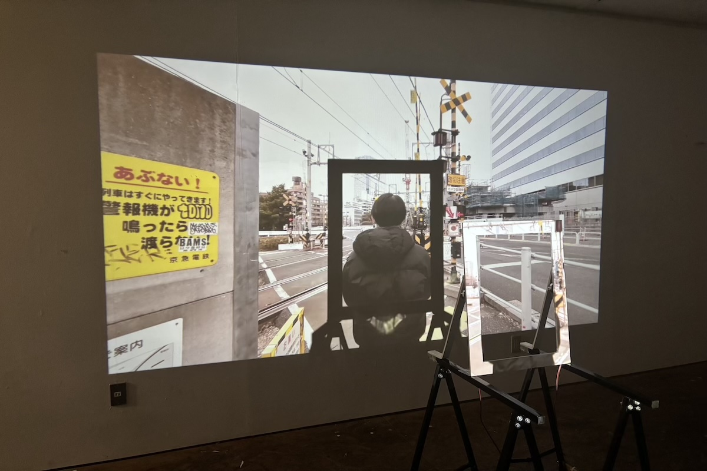

さようなら、そして

再開発によって消失しゆく故郷・品川の踏切を舞台に、「あの時」の音世界から都市と個人の関係性を思考する試みである。生まれ育った場所が姿を変える時、そこで生きる「自分」もまた流動の中にある。効率化で失われた日常の「ときめき」を再発見し、鑑賞者が主体的に世界を編み直すプロセスを提示したいと考えた。
デジタルデータとして永続する「情報」に対し、あえて「現象」としての不可逆性と「物質」としての手触りを回復させる。一度聴くと消滅する設計を施したサウンドスケープを通じて、音（現象）が本来持っていた二度と戻らない一回性を提示し、現代におけるノスタルジーの新たな在り方を問うている。
無機質な都市装置と温かみを帯びた故郷。この二面性を引き受け、変化し続ける都市や自己の中に蠢くエモーションを「仮固定」する場を創出することで、アートと日常の境界を脱構築することを目指した。
■ 技術スタック（Technical Stack）
- Sound Design：Logic Pro（環境音のサウンドデザイン・編集）
- Programming / Logic：Unity（リアルタイム音響・インタラクティブ・ロジック生成）
- Hardware：振動スピーカー、プロジェクター、オーディオインターフェース